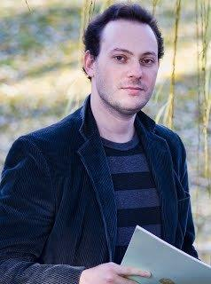

| Name | Bio |
|---|---|
Orsi Lengyel |
Orsi Lengyel was born in Budapest. After completing a Bachelor of Music Performance degree in Vienna, Austria, she immigrated to Canada in 1995 and studied with Shauna Rolston and Simon Fryer at the University of Toronto. In 1996-97 she took part in a string quartet and studied with Paul Pulford and the Penderecki String Quartet. She studied Suzuki cello with Sally Gross, and received a Kodaly teacher's certificate at the RCM in 1998. She is teaching Suzuki cello and Kodaly musicianship at the North York Suzuki School of Music since 1999. Orsi is the co-founder and owner of Wellington Music performance group and agency, playing with Tapestry New Opera Works and other professional chamber groups. |
Garth Nichols |
Garth Nichols is the Director of Teaching and Learning at Bayview Glen, located in Toronto, Ontario,
and is the Co-Founder and Lead Facilitator of Cohort 21.
Mr. Nichols has made the transition from teaching in
the high school classroom to focus on the training and development of teachers because of his passion for
the art and science of teaching. Graduating from his Masters in Curriculum, Teaching and Learning from
OISE/UT he has continued to deepen his exploration and impact on how teachers teach and how students
learn in the 21st Century.
At Bayview Glen, Mr. Nichols oversees teacher development, integration of technology and curriculum design. He brings a passion for exploring innovation, student engagement and the positioning of teachers in the educational landscape to understand how these can work together to improve student learning. As a Google Certified Educator, Mr. Nichols also has a keen interest for integrating different technologies into everyday teacher practice to improve the learning environment at Bayview Glen. In 2012, Mr. Nichols co-founded Cohort 21, a year-long, job embedded PD experience for teachers in the CIS Ontario community. It combines the best of face-to-face learning with digital technology tools to foster community and sharing among teachers to challenge and support them as they shift towards, what is referred to generally as, 21st Century teaching and learning. In its third year, Cohort 21 continues to be a hub of cutting edge pedagogical thinking, discussions and action. |
|  Michael Berkovsky |
CanadianIsraeli pianist, Michael Berkovsky, made his New York debut at Avery Fisher
Hall and has toured as a soloist in Ireland, Costa Rica, Japan, Italy, Israel, Canada, and the
United States. He has won numerous international piano competition awards and has
performed under the baton of Vladimir Feltsman, Stefan Sanderling, Leon Fleisher and
William Noll. He was also a recipient of the America Israel Cultural Foundation Scholarships,
and with the recommendation of Maestro Valery Gergiev, was awarded White Nights
Foundation Scholarships while studying at the Juilliard School.
Dr. Berkovsky regularly collaborates with numerous chamber groups and award winning musicians, including Jasper string quartet and musicians from the Toronto Symphony Orchestra and Toronto Opera Company. Michael is involved in the cultural life of his community and his upcoming performances include appearances with the York Symphony Orchestra and Kindered spirit orchestra. Dr. Berkovsky was a guest artist at numerous international festivals, including arts Naples where he collaborated with Russian pianists Pavel Narcessian, and Music Niagara Festival. He frequently judges competitions in Canada and is a board member of the Canadian Music Competition and Artistic Committe advisor to Chinese Cultural Center Music Festival. He also conducts master classes regularly in Toronto, Kingston, and Barrie. Mr. Berkovsky is in high demand as a teacher and currently has a full studio in which a number a number of his students have placed highly in local and national competitions. Dr. Berkovsky has also performed together with pianist LangNing Liu for the 2012 Moon Festival at the Cultural Chinese Art Centre in Markham. Recently, Mr. Michael Berkovsky and Mrs. LangNing Liu were awarded a grant by the Canadian Arts Council to complete a recording project of the Chinese folk tune arrangements and newly commissioned work titled "Sirens" by Constantine Caravassilis. The recording, produced by WTC Productions, will be released in the upcoming year. Dr. Berkovsky was born in the former Soviet Union and immigrated to Israel in 1990. He has studied with Nataly Litvinova and was mentored by Alexander Slobodyanik. In 2001, his family moved to Toronto, Canada. He received his Bachelor’s and Master’s Degrees from Juilliard where he studied with Yoheved Kaplinsky and Julian Martin. In 2011, he completed his Doctoral degree at the Peabody Conservatory of the John Hopkins University while under the tutelage of Professor Yong Hi Moon. |
Stavros Vassos |
Professor Stavros Vassos currently works as an Assistant Professor in the Department of Computer,
Control, and Management Engineering at the Sapienza University of Rome. He is passionate about
developing Artificial Intelligence (AI) software modules that can be embedded in real-world physical
products or applications to add flexibility and autonomy. His current work focuses on different
scenarios in cognitive robotics, video games, and interactive smart spaces.
He completed his MSc and PhD at the department of Computer Science in the University of Toronto. He received his Diploma in Electrical and Computer Engineering in the National Technical University of Athens. For his MSc and PhD he was involved with proving theoretical results on reasoning about action and change in the situation calculus, and providing practical solutions for dealing with incomplete information in a way that is tractable. He has been part of the Cognitive Robotics group and has been an active developer of the high-level agent programming language IndiGolog. |
Ea-Ling Seun |
Ea-Ling Seun has been teaching music to young children for the past 10 years, and has been part of the Bayview Glen Music Faculty for the past 2 years and a half. Her love of Musical Arts came at a young age and has led her to pursue her craft throughout high school and University. Ms. Seun could not be more excited to lend a helping hand with ‘Ctrl-Z’s’ latest project. |
Tom Richards |
Tom Richards is a trombonist, pianist, composer and conductor living in Toronto. He leads an electro-chamber-jazz ensemble called Riverrun and is a sideman in more than a dozen other projects. As a trombonist, Mr. Richards has recorded and performed with The Wooden Sky, The Hidden Cameras, Spoon, The Human Rights, Shred Kelly, The Thing Is, The Australian Art Orchestra, Theatre Columbus, and many others. Mr. Richards's composition Full and Empty Barrel for trumpet and piano was premiered at the Orchestre Symphonique de Montreal Standard Life Competition in November, 2014. As a conductor, Mr. Richards performed the debut of Ali Berkok’s original score for Eisenstein’s silent film “Battleship Potemkin”. In 2013, Mr. Richards conducted Sarah Jerrom's “Yeats Project” for a TD Jazz Festival Special Projects Initiative concert. |